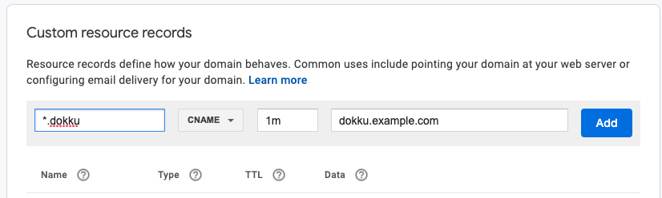
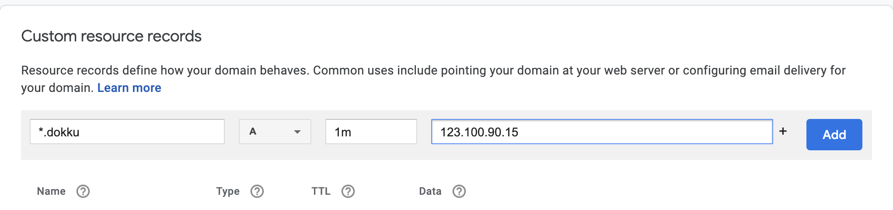

How to set up a wildcard subdomain on Google Domains¶
Today, I was working with dokku, and I found myself in need of a wildcard subdomain. A wildcard DNS record is a record that will match requests for non-existent subdomains. For instance, if you set a wildcard DNS record to *.example.com, and a user requests random.example.com or foo.example.com, etc.. the requests will be forwarded to whichever server *.example.com points to.
For my use case, I wanted to host multiple applications on a single server, and wanted to map each app to a subdomain such as app1-name.dokku.example.com, app2-name.dokku.example.com, etc. To achieve this, I needed to set up a wildcard DNS record for *.dokku.example.com.
Currently, I happen to own a domain on Google Domains. Below are the steps I followed to set up the *.dokku.example.com wildcard DNS record.
Note
I’m using example.com as a dummy domain for demonstration purposes.
Server/VM with a dynamic IP address¶
For a server with a dynamic IP address, we need to create a dynamic DNS record and a CNAME record in our DNS settings.
Step 1: Create a Dynamic DNS record in Synthetic Records¶
Create a synthetic record for dokku.example.com instead of *.dokku.example.com:

Step 2: Create a CNAME record of the subdomain¶
Create a CNAME record of the subdomain *dokku.example.com and point it to the synthetic records subdomain dokku.example.com:

Step 3: Set up ddclient on your server¶
First, make sure ddclient is installed on your server and the ddclient service is up and running.
Second,
$ sudo nano /etc/ddclient.conf
And edit these lines using the credentials from the created Google Domains dynamic DNS record:
##
## Google Domains (www.google.com/domains)
##
# protocol=googledomains,
# login=my-auto-generated-username,
# password=my-auto-generated-password
# my.domain.tld, otherhost.domain.tld
Example:
daemon=3600 # Check every 1 hour
ssl=yes
use=web, web=checkip.dyndns.com/, web-skip='IP Address'
protocol=googledomains
login=xxzzzxxxxxxzzzzzz
password=xxzzzzxxxxzzzzz
dokku.example.com
Verify that the ddclient is working by trying:
sudo ddclient -daemon=0 -debug -verbose -noquiet
Step 4: Verify that our changes have taken effect¶
We can verify our changes on a UNIX machine by trying one or more of the following commands:
host dokku.example.comdig dokku.example.comnslookup dokku.example.com
Once we have a confirmation that our top level subdomain works, we should be able to query any other name under dokku.example.com and get back an IP address of our server. Try:
host myapp.dokku.example.comdig +short '*.dokku.example.com'
Credits: Thank you StackExchange 🙏🏽!
Server/VM with a static IP address¶
For a server/VM with a static IP address, the process is much simpler. Creating an A record pointing to the IP address of the server/VM suffices:
